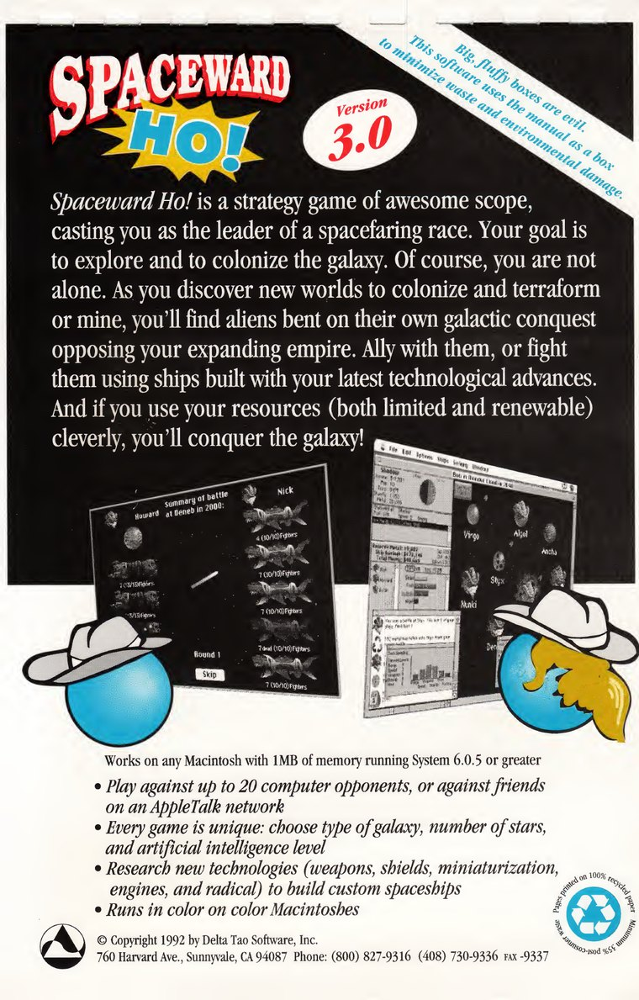

Arka Kapak

Büyük, kabarık kutular kötüdür. Bu yazılım, israfı ve çevreye verilen zararı en aza indirmek için kılavuzu kutu olarak kullanır.
Spaceward Ho!, seni uzayda yol alan bir ırkın lideri yapan, müthiş kapsamlı bir strateji oyunudur. Amacın galaksiyi keşfetmek ve kolonileştirmek. Elbette yalnız değilsin. Kolonileştirip terraform edeceğin ya da kazacağın yeni dünyalar keşfettikçe, büyüyen imparatorluğuna karşı çıkan ve kendi galaksi fethine kafayı takmış uzaylılarla karşılaşırsın. Onlarla müttefik ol ya da en son teknolojik buluşlarınla yaptığın gemilerle onlarla savaş. Kaynaklarını (hem sınırlı hem de yenilenebilir olanları) akıllıca kullanırsan galaksiyi fethedersin!
System 6.0.5 ya da üstünü çalıştıran, 1 MB belleği olan her Macintosh’ta çalışır
- En fazla 20 bilgisayar rakibine ya da bir AppleTalk ağında arkadaşlarına karşı oyna
- Her oyun eşsizdir: galaksinin tipini, yıldızların sayısını ve yapay zekâ düzeyini seç
- Özel uzay gemileri yapmak için yeni teknolojiler (silâhlar, kalkanlar, minyatürleştirme, motorlar ve radikal) araştır
- Renkli Macintosh’larda renkli çalışır
© Telif Hakkı 1992 Delta Tao Software, Inc. 760 Harvard Ave., Sunnyvale, CA 94087. Telefon: (800) 827-9316, (408) 730-9336, Faks -9337. En az %35 tüketici sonrası atık. Sayfalar %100 geri dönüştürülmüş kâğıda basılmıştır.
Delta Tao kılavuzunun yeniden yapım tarafından yapılmış, resmî olmayan Türkçe çevirisi. İngilizce sayfa.